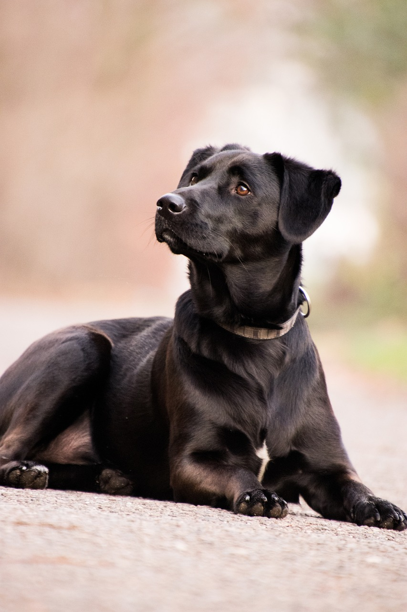

Faktai

1. Labradoro retriveris per pastaruosius 100 metų yra populiariausia veislė pasaulyje.
2. Labradoras yra puikus kompanionas kiekvienam.
3. Labradorai draugauja su visais, nes neturi jokios agresijos.
4. Mėgstamiausias labradoro hobis – įtikti savo šeimininkui.
5. Subalansuotas ir linksmas charakteris.
6. Labradorą labai lengva ugdyti ir mokyti.
7. Jie turi unikalų kailį, sušlapus kailiui – povilnis ir oda išlieka sausa.
8. Jie nuostabūs medžiotojai, dėl noro įtikti savo šeimininkui mielai atneša paukštį.
9. Jie labai gerai plaukioja ir nardo.
10. Jie mėgsta šypsotis ir užkrėsti kitus gera nuotaika.
11. Labradoro vilna yra mažai alergiška. Šuns kvapas jaučiamas tik kailiui sušlapus, arba jei šuo netinkamai
maitinamas arba jei šuo nesveikas.
12. Labradoras – šuo gidas – populiariausia veislė žmonėms su negalia.
13. Jie gerai ištveria vienatvę, bet visada pirmenybę teiks šeimininko draugijai.
14. Labai taktiškas šuo puikiai sutaria tiek su mažais vaikais tiek ir pagyvenusiais žmonėmis.